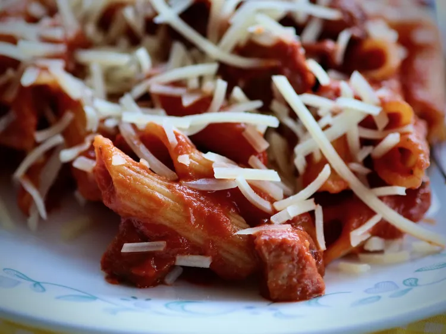

Sausage Pasta

As colder weather comes creeping in, comfort dishes like this 20-minute sausage pasta take the spotlight. Chicken sausage adds a nice change to this easy meal. Serve in deep bowls with bread to scoop up the extra sauce.
Ingredients
- 8 ounces penne pasta
- 2 Italian chicken sausages, such as Aidell's®
- 1 tablespoon olive oil
- 1 clove garlic, finely minced
- 2 tablespoons butter
- 12 ounces marinara sauce
- 1/4 cup heavy cream
- freshly grated Parmesan cheese
Steps
- Bring a large pot of salted water to a boil, add pasta, and cook until tender with a bite, 9 to 11 minutes, or according to package directions. Reserve about 1/4 cup pasta water; drain.
- Meanwhile, slice chicken sausages in half, then slice each half into small bite-sized pieces.
- Heat oil in a skillet over medium heat and add sausage. Cook and stir until sausage is lightly browned, about 3 minutes. Scrape up any browned bits from the bottom of the skillet.
- Add butter and garlic to the skillet; cook until garlic is fragrant, about 1 minute.
- Add marinara sauce and cream to the skillet. Cook until combined and completely warmed through; stir in pasta. If saice is too thick, thin with a little pasta water.
- Remove from heat and add in as much Parmesan as you like. Serve in deep bowls with bread to scoop up the extra sauce.
Home